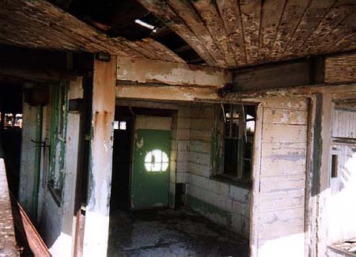
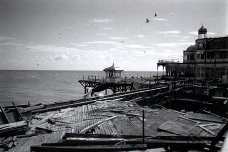
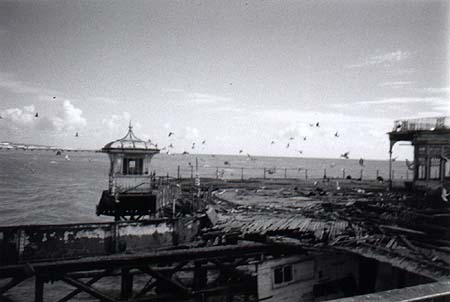
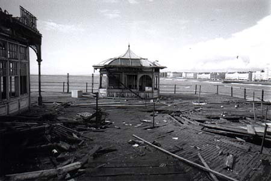

Jeremy Day >> Projects >> Take a promenade along West Pier >>
|
Cream, brown, green
All the other shots are taken with an Ilford B/W disposable I had on me, but the colours were so lovely I decided to risk a real camera for this one shot. The faded greens and creams were probably lurid when they were first painted, but they're now lovely; subtle; streaked with rust. |
| The ruddy great hole The Pier was mined and partially destroyed during World War II as part of Britain's sea defences. The far end of the Pier was entirely separated from the rest, and the deck between these points is extra-specially unsafe; it looks like it's trying to separate off again. |
| The birds fly off Look down into the hole and you can see the deeper structures of the Pier. We can't get down there, that's more space that belongs to the birds. Pigeons now, but every evening, starlings swirl around West Pier like gritty smoke for hours, sometimes, before coming to roost. |
|
The old Kiosk
Just outside the old Theatre, an old kiosk used to sell refreshments, and then (when it, too, became an arcade) tokens and fizzy drinks. It's stranded now, marooned in a sea of rotting wood; still has a sign up, though. Inside the Theatre. |